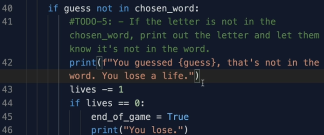

دعونا نكمل اللعبة الخاصة بنا في هذا التحدي الخامس والاخير
في المرحلة الاولى سوف نقوم بجعل قائمة world_list تستعمل القائمة الطويلة من الكلمات في الملف المضاف بدل الثلاث كلمات السابقة حتى ان القائمة في الملف المضاف تحمل نفس الاسم world_list اذن لن نحتاج لتغيير الكثير سوف نقوم بعمل import لملف hangman_words عن طريق ال keyword import كما راينا في الدروس السابقة ثم استعمال النقطة بحيث نكتب اسم الملف ثم نقطة اسم القائمة
يمكنك ان تكون اكثر دقة في استيرادك لملفات اخرى بحيث انت تعرف بالضبط المتغير او الدالة او في حالتنا القائمة بحيث تقول من الملف الفلاني قم بعمل import للقائمة الفلانية مثلا ولن تحتاج لاستعمال النقطة في هذه الحالة بل استعمله مباشرة
بنفس الطريقة مع المرحلة الثانية حيث نقوم بطباعة الصور من الملف hangman_art من hangman_art نقوم بعمل import لقائمة الصور stages وهذا سوف يذهب الخطأ من الكود الخاص بنا
بنفس الطريقة مع المرحلة الثالثة عمل import للوغو الخاص باللعبة من ملف hangman_art وطباعته ببساطة
لاحظ اننا نقوم بعمل Import لشئين مختلفين من نفس الملف فاذا اردت يمكنك عمل import لهما في نفس السطر وليس تكرار السطر وسوف يعمل الكود كما هو متوقع من دون ان نقوم بتكرار كتابة الكود في مكانين مختلفين في نفس الملف و لاتنسى ان تفصل بينهم بفاصلة
في المرحلة الرابعة سوف نتحقق ما ان ادخل المستخدم حرفا قد ادخله من قبل وهو حرف صحيح موجود في الكلمة المختارة فسوف نخبره بذلك وسوف نفعل ذلك من خلال التحقق من قائمة display التي تحتوي على الحروف التي حزرها اللاعب ونكتب اذا كان الحرف الذي حزره اللاعب في قائمة display سوف نقوم بطباعة الجملة لقد قمت بالفعل بادخال هذا الحرف من قبل
في المرحلة الاخيرة نتحقق ما ان لم يكن الحرف الذي ادخله المستخدم ليس في الكلمة المختارة سوف نقوم بطباعة الجملة التالية: لقد قمت باختبار حرف ليس في الكلمة لقد خسرت حياة
هنا نصل الى نهاية اللعبة الخاصة بنا وسوف تكون جاهزة لتلعبها مع اصدقائك وتجربها وتكون فخور بنفسك لانك قمت ببرمجتها بنفسك و لاتنسى ان تقوم بحذف الاجزاء التي تقوم بطباعة الحل من الكود الخاص بك لانك انهيت برمجة اللعبة ولا تحتاجها بعد الان لانها تعتبر غشا
اضغط هنا لترى الكود كاملا للعبة
ونلتقي في دروس اخرى ان شاء الله
مع السلامة